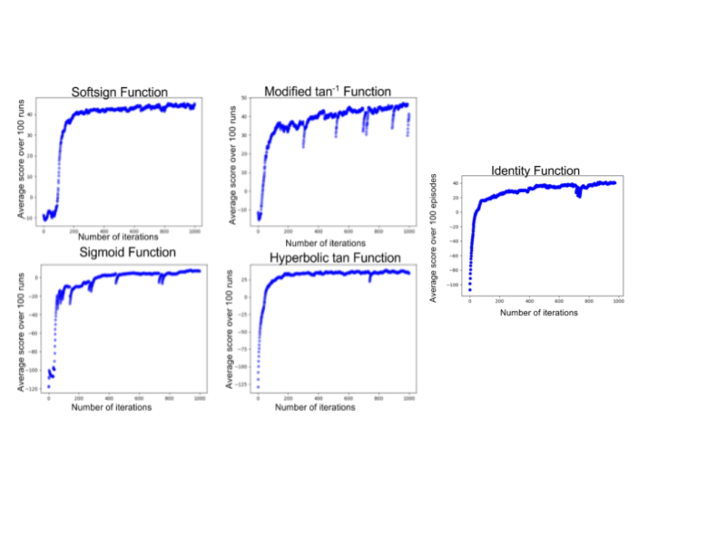

Learning Rates of AI Based on Activation Functions
Investigating the change in learning rate of a neural network with various activation functions in OpenAIGym's "BipedalWalker-v2" environment.
Introduction
Since Alan Turing’s work during WWII, the concept of artificial intelligence has intrigued computer scientists worldwide. For this project, I used a "neural network" to teach a two-legged robot how to walk. A neural network essentially works by acting randomly and observing what happens in the environment: if a series of actions leads to something 'good', the neural network will take similar actions in the future, but if a series of actions leads to bad consequences, the neural network will avoid those actions. The network learns through extensive trial and error. A neural network tries to model a human brain, so 'synpases' connect the different 'nodes' of the network. Neural networks can be designed in a multitude of ways, but each one will use a mathematical “Activation Function” to correct itself. Activation functions are essentially used to calculate error and adjust the parameters of the network accordingly; as such, the activation function is integral to the success of the intelligence.
Once again, many different functions can be used, which will all produce varying results. Some will provide greater learning speeds, while others will provide greater accuracy. Truly, though, programmers still don’t really know which activation functions are most useful in which situations. As such, programmers often have to do some guesswork when choosing which activation function to use.
The Environment
For this project, I used OpenAIGym’s “BipedalWalker-v2” environment. This environment is simply robot body (hull) with two footless legs, and the goal of the environment is to build an AI for the bot so that it learns how to walk. The environment rewards the robot for moving forward, and punishes the robot for using up energy and falling over. Therefore, the robot must learn how to walk in the most efficient manner to gain the most rewards.
Creating the Neural Network

For my neural network, I used 404akhan's model from the OpenAIGym website. Like other neural networks, this network initially assigns its synpatic weights randomly, but programatically chooses a wide range of weights. Then, the network observes the current state of the environment (angles, speed, and angular velocity of body parts; contact with ground), and decides what action it will take (i.e. how it will move its legs). In order to decide, the network does matrix multiplication with the current state and the models existing parameters. As part of this math, the network also uses the activation function to decide which action to complete. After completing an action, the network reevaluates the state and its own parameters and chooses a new action. This process repeats itself until time runs out or the bot falls over.
For this project, I used the exact same model every time. This means that all of the parameters of my neural network were initially set up in exactly the same way. The only difference between each model was in the activation function. The activation functions I used (and their graphs) can be seen in this image.
Results

In order to easily understand the significance of the activation function, I used the "matplotlib" library to plot the robot's score as it ran more trials. As a network learns, it becomes more able to complete its task. Therefore, we would hope that each model would improve as it runs more trials, and since each model uses a different activation function, we would expect the learning rates of each model to be different in some way.
As evident in the graphs, different activation functions affect learning rate significantly. For example, the linear and hyperbolic tan functions learning very quickly, while other functions such as the softsign function to longer to start. However, once the network started increasing its score, it increased very rapidly for the following iterations. Soon, though, the score began leveling out again and network learned extremely slowly.
In addition, some functions were more stable than others. After the last 200 iterations, the linear and softsign functions stay at around the same score, while the sigmoid and modified tan functions often make ‘jumps’ downward where the score gets much lower, before rising back to the plateau again.
Lastly, each of the different functions achieved a different final score, ranging from 0 to 50. One might think, therefore, that those functions with higher final scores are ‘better’, but it is worth noting that each function also started with a different score. For example, the linear, sigmoid, and hyperbolic tan functions started with scores <100, while the softsign function started with a much higher score of -10. Those functions that started with lower scores ultimately made more progress, so it is difficult to determine which function is better.
Conclusion
Overall, my programs demonstrated why it is so difficult to create efficient neural networks. Not only do you have to try different base parameters, but the networks activation function can also affect learning rate significantly. Yet, even when I tested different functions, I still can discern no ‘winning’ function with great ease. In the real world, programmers typically don't retrain their networks a bunch of times to find the most efficient way to train it, since that in itself would be inefficient. In the future, it would be worth running each program for longer to see if any functions can make a surprise breakthrough that increases scores immensely, but for now, programmers will have to continue their random guessing when they create their networks.